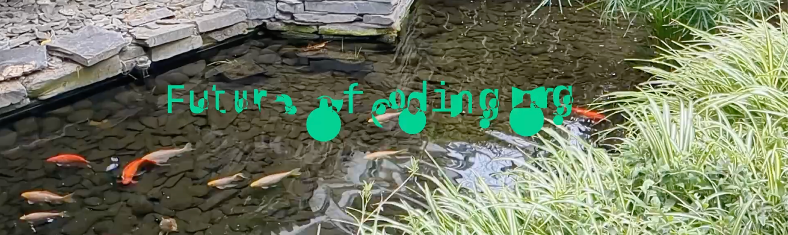
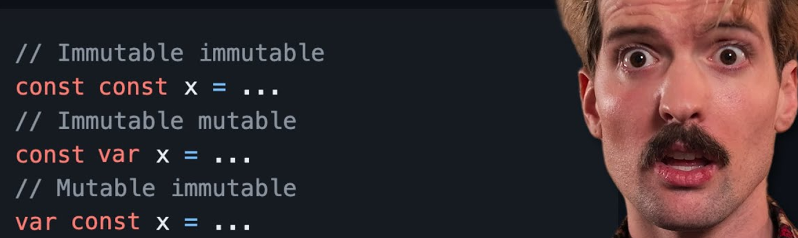
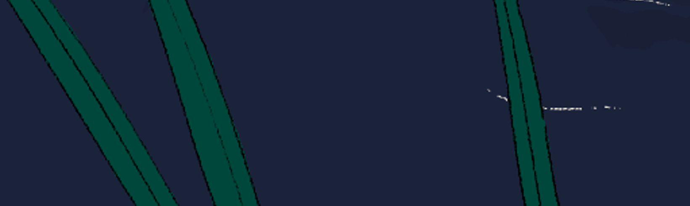

The weekly TODEPOND PONDCAST is for paying supporters only.
Please only listen / read if you've
paid
:)
Hullo. Welcome back to another weekly edition of the ...
🐸 TODEPOND PONDCAST 🐸
What's new this week?
In the future of coding world, I released a new video! It's called This Is Not A Fish and it's a video adaptation of a recent episode. Check it out here.
And a new future of coding episode got released too. It's about the infamous pygmillion paper. And you can listen to it here. Like the previous episode, it also includes a segment where I give a history lesson over some classical music (but it's right near the end). And I could probably turn that into a video too.
And I got this new microphone working! It seems really powerful, but of course it isn't stereo (I think?) so it's not as good for certain ASMR-y noises. But it is better at a different kind of ASMR. It's like a different genre of ASMR. The solution here is to buy another one, and then place them on either side of my head. But that would be a bit excessive.
Theo, an influencer, posted up his video reactions to dreamberd and spellular automata, which is really fun. Watch them here and here. And of course, I've seen a huge influx of viewers and patrons because of that.
I think it would be nice to do a video reaction to Theo's video reaction at some point. Keep your ears peeled for when I might do that. It'll probably be a youtube livestream, and then a slightly edited video.
I've been looking for opportunities to share a bit of the behind-the-scenes of videos, and some hidden meanings (and so on), so this might be a nice way to do it.
I have been continuing to edit the Top 99 Ways To Make Sand video!
I have been mainly focusing on pacing and timing. The video is so bloody long that I needed to make the ending even longer.
Like...
I like to have a little "calm down" period at the ends of the videos. I think the best example of this is Tourism, which completely switches musical styles. But Screens also clearly does it, and so does Spellular and Arrows. And even the most recent This Is Not A Fish video has a little bit of calming down at the end.
The problem with the Top 99 video is that it's so long— so the calm down period needs to feel even longer, so that it does its job.
There's more going on too! I'll keep you up to date next week. For now, thank you so much for all your support. Welcome to all the new people who have joined in these last seven days, and welcome back to those of you who have been here for years! This time last year one of my things went viral, so I think a whole bunch of you just had your anniversary. Until next time... I hope you have a great week.
Days since tode fell asleep: 535Back to the pondcast.